A caixa de entrada não diz o que importa
- Dezenas de emails por dia, misturados com notificações e newsletters.
- Threads com 20 ou 30 mensagens: para responder é preciso ler tudo outra vez.
- O pedido urgente de um cliente fica abaixo do que chegou depois.
- Tarefas escondidas no meio do texto, que ninguém regista.
- Escrever cada resposta do zero.
Quatro passos, sempre com a última palavra tua
Lê
O Outlook clássico deste PC (ou o Microsoft 365, pela ligação Graph). Nada sai do PC além do texto que vai para a IA.
Ordena
Cada conversa recebe um nível, de P1 a P4, por regras claras: prazo, cliente, tipo de pedido, dias à espera. Diz sempre porquê.
Prepara
A IA resume a conversa toda, lista as tarefas e escreve uma proposta de resposta na língua do email.
Tu decides
Editas, crias o rascunho no Outlook e envias tu. A app nunca envia nem apaga emails.
Uma lista do que precisa de ti, do mais urgente para o menos
A lista junta as mensagens de cada conversa numa só linha. Por baixo do assunto aparece o remetente, a categoria (Pedido direto, Aprovação / decisão, Escalação / problema...) e etiquetas úteis: externo, CC, número de mensagens, anexos, follow-ups e tarefas. À direita ficam o prazo e o tempo de espera. O botão ↻ refaz o resumo, as tarefas e a resposta dessa conversa sem a abrir.
- Uma linha por conversa, não por email: nível, remetente, tipo de pedido e um resumo de 2 ou 3 frases.
- Prazos à vista (atrasado, hoje, amanhã) e há quantos dias úteis está à espera.
- Contadores P1–P4 no topo; o ícone do separador mostra quantos P1 faltam.
- Atualiza sozinha a cada 15 minutos e avisa com uma notificação do Windows quando chega um P1.
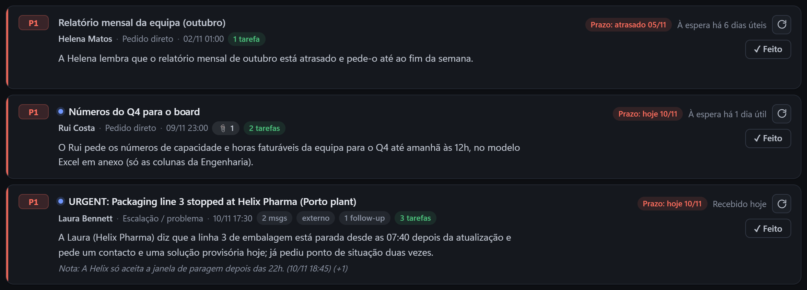
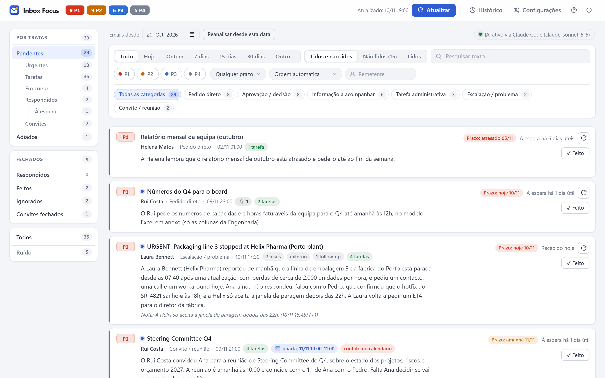
P1 a P4, sempre com o porquê
O nível é calculado por regras que podes ver e mudar nas Configurações (palavras de urgência, remetentes VIP, temas importantes, domínios internos). Ao abrir um email, a caixa "Porquê P1" lista as razões. Convites de reunião seguem a data da reunião: hoje P1, amanhã P2, esta semana P3, depois P4; um conflito no calendário sobe um nível. O ruído fica sempre em P4.
- Regras transparentes: escalação ou problema, palavras de urgência, prazo, cliente externo, importância alta, follow-ups, dias úteis à espera.
- Remetentes VIP e temas importantes (ex.: avaliação de desempenho, 1:1) sobem um nível.
- A IA pode ajustar um nível, e diz porquê.
- Discordas? Mudas o nível na linha; a app aprende e sugere tratar o remetente como VIP ou ruído.
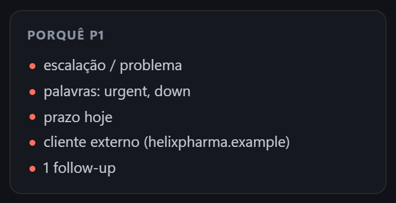
Encontrar depressa o que interessa agora
As datas contam a última atividade da conversa: email recebido, resposta tua ou alteração tua na app. Um email antigo que tratas hoje aparece em Hoje com uma etiqueta a dizer porquê (ex.: "feito 03/11 12:07"). Se o período pedido for maior do que os emails que a app leu, aparece um aviso a explicar como ler mais. Nos níveis, com todos visíveis, clicar em P1 mostra só os P1; clicar noutros junta-os; tirar o último volta a todos.
- Datas: Tudo, Hoje, Ontem, 7, 15 e 30 dias, ou Outro… com o número de dias que quiseres.
- "Só mais antigos" mostra o contrário: o que está parado há mais desses dias.
- Lidos / Não lidos, P1–P4 (clicar num mostra só esse), prazo, categoria, remetente e pesquisa de texto.
- Ordem automática ou à escolha (prioridade, data, prazo, tempo à espera...), com um segundo critério para desempatar.
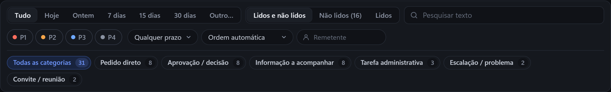
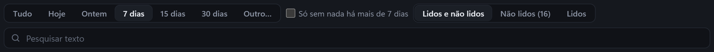
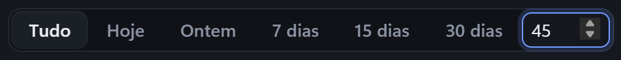
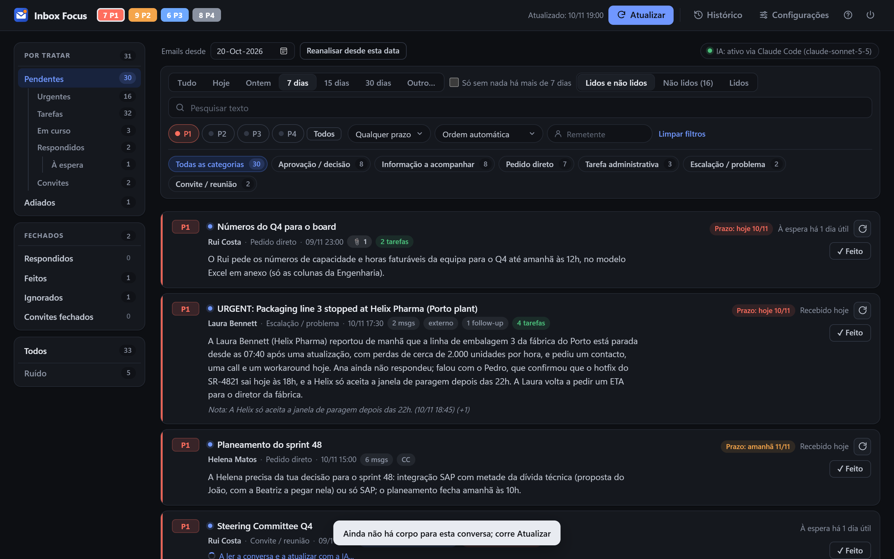
Cada coisa no seu sítio
Os contadores ao lado de cada vista respeitam o período e o filtro de leitura escolhidos. Responder não fecha: uma conversa a que respondeste fica nos Pendentes, em Respondidos (e Em curso), com a etiqueta "Respondido", até carregares em Feito ou Ignorar. Dentro dos Respondidos, À espera mostra aqueles em que pediste algo e ninguém respondeu. Nos Fechados há outro Respondidos, com os que respondeste e depois fechaste.
- Pendentes: o que espera por ti. Urgentes: P1, P2 e prazos de hoje ou atrasados.
- Tarefas: tudo o que há para fazer além de responder.
- Em curso e Respondidos: o que já começaste ou respondeste, aberto até carregares em Feito.
- Fechados: só o que tu fechaste (Respondidos, Feitos, Ignorados). E ainda Convites, Adiados e Ruído.
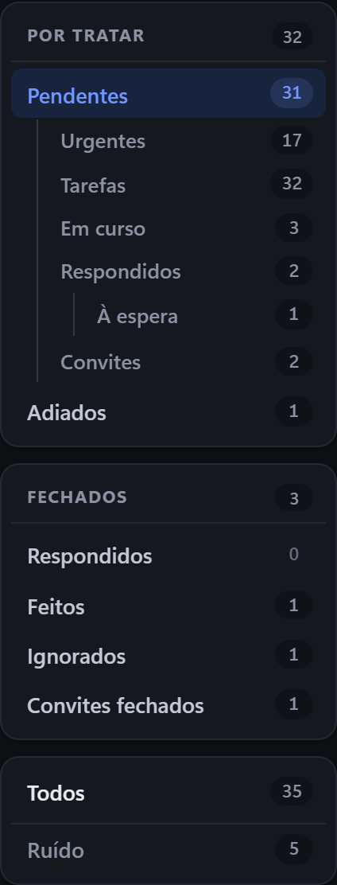
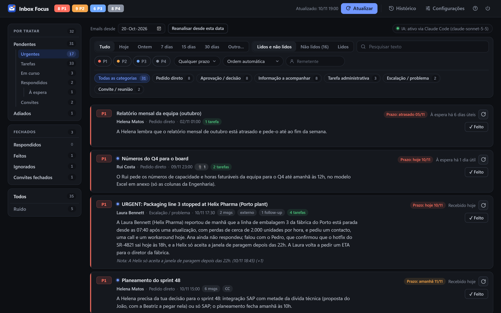
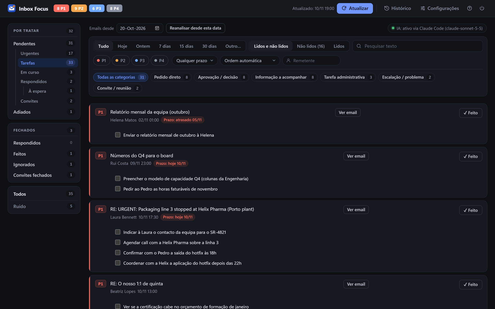
Tudo o que precisas para decidir, num só ecrã
O resumo e a resposta têm em conta a conversa toda, não só a última mensagem: a IA recebe sempre a primeira mensagem, as do meio numa linha e as mais recentes completas. Em baixo fica a barra de ações (Feito, Feito e arquivar, Ignorar, Em curso, Lido, nível, Adiar e Spam).
- Resumo da conversa toda: de que trata, o que já foi dito e decidido por quem, e o que falta.
- A Conversa com todas as mensagens; a que estás a responder fica aberta.
- Anexos com tipo, nome e tamanho; abrem no programa normal. A IA lê o texto dos anexos.
- Ao lado: porquê este nível, tarefas, notas e a ajuda da IA.
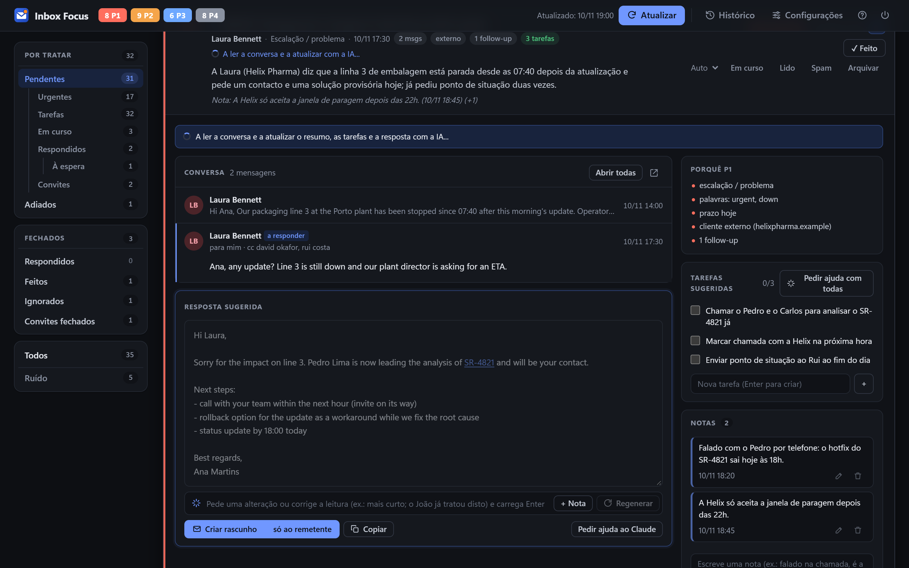
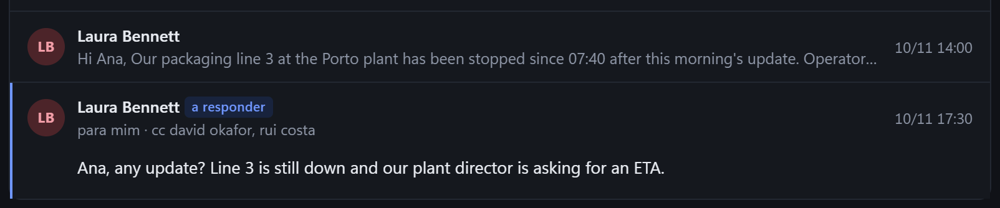
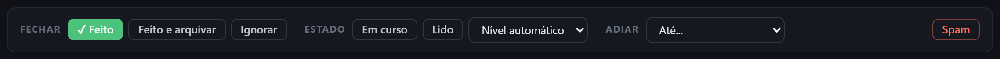
Uma proposta de resposta que ajustas em segundos
Os pedidos juntam-se uns aos outros até carregares em Esquecer pedidos. Regenerar parte do texto que está na caixa (com as tuas correções). As notas [[ ]] nunca vão para o rascunho. Copiar copia a resposta com os links e as listas formatados, para colar onde quiseres.
- Escrita na língua do email, com a tua assinatura e sem frases feitas.
- Edita à vontade, ou pede uma alteração: "mais curto", "o João já tratou disto".
- Para mudar um sítio exato, escreve lá uma nota entre
[[ ]]: ex.[[diz que só consigo na sexta]]. - Criar rascunho põe a resposta no Outlook (a todos ou só ao remetente). Tu revês e envias.
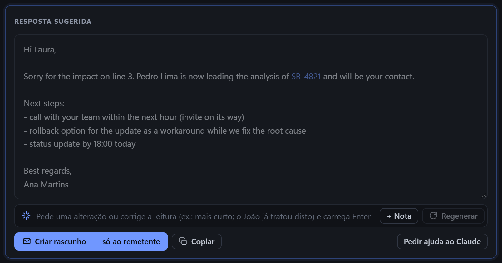
O que há para fazer, além de responder
As tarefas que crias têm a etiqueta "tua". Para mudar o texto de uma tarefa, passa o rato por cima e carrega em ✎: Enter guarda, Esc cancela, e o aviso tem Desfazer. Uma sugestão da IA que edites passa a ser tua (a IA deixa de sugerir a original) e continua no mesmo lugar; voltar a escrever o texto original devolve-a à IA. As apagadas e as rejeitadas ficam em "N tarefas removidas", com Repor. Criar uma tarefa num email já fechado volta a pô-lo nos pendentes.
- A IA tira as tarefas da conversa; tu acrescentas as tuas.
- Começar (em curso) ou marcar como feita; a resposta é reescrita com o progresso.
- Qualquer tarefa edita-se no ✎, sem perder o estado nem o lugar na lista.
- Uma sugestão que não faz sentido rejeita-se no ✕ e não volta a aparecer.
- A vista Tarefas junta as tarefas de todos os emails.
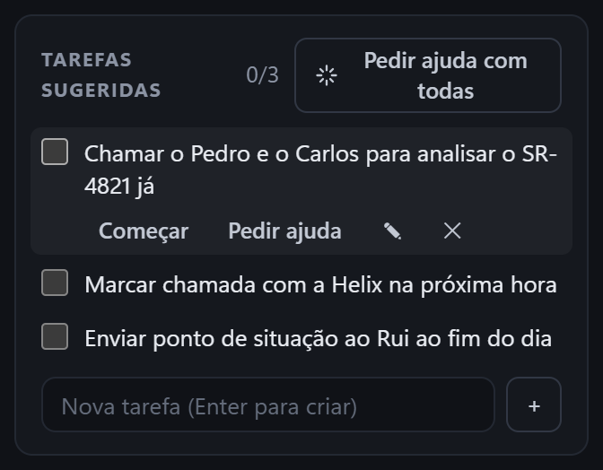
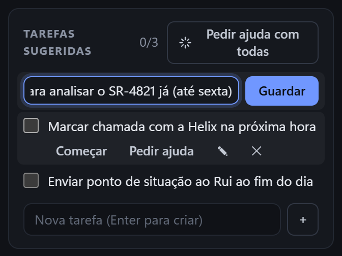
Delegar o trabalho de investigação, uma tarefa ou todas
Podes pedir ajuda numa tarefa (passa o rato por cima e carrega em Pedir ajuda), em todas as tarefas por fazer (botão no cabeçalho das Tarefas) ou no email todo (botão por baixo da resposta). Antes de enviar podes editar o pedido e tirar linhas. Com o Claude e a app Claude instalada, abre no Cowork e o resultado aparece sozinho em "Ajuda do Cowork". Com outra IA (ou sem a app Claude), a app copia o pedido e abre o site da IA (ChatGPT, Claude, Gemini ou Microsoft Copilot, à escolha nas Configurações): no ChatGPT e no Claude o pedido já aparece escrito, nos outros colas com Ctrl+V. Aí a IA não tem acesso às tuas contas: diz-te o que fazer e escreve os textos. No fim pede-se-lhe um resumo do que ficou feito e do que falta; cola-o no email em "Colar resultado" e conta como o do Cowork, com Reescrever resposta com isto e Descartar.
- Com o Claude: abre uma tarefa no Cowork (app Claude) já com o email e o pedido preenchidos.
- "Pedir ajuda com todas" leva as tarefas numeradas; a IA trata uma de cada vez.
- No Cowork, o Claude usa as tuas ligações (Outlook, Teams...) e pede sempre autorização antes de agir.
- Com outra IA: copia o pedido e abre o site dela; no fim colas o resultado no email.
- O resultado volta à app e a resposta sugerida é reescrita com ele.
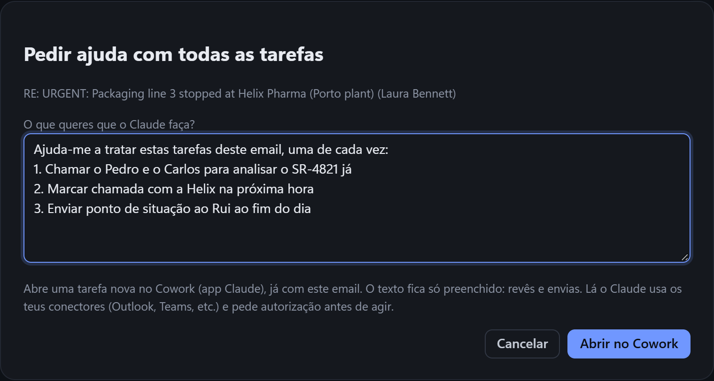
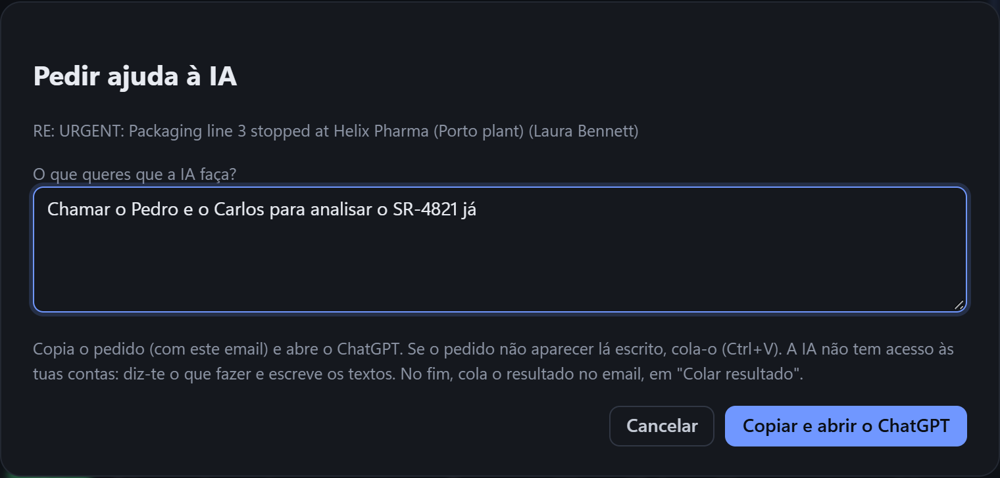
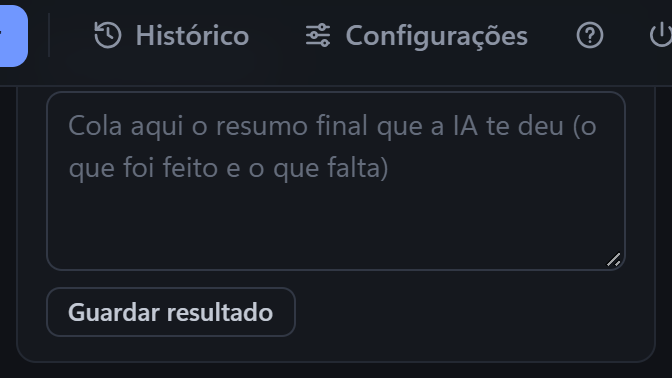
O que só tu sabes, a IA passa a saber
Escreve na caixa e carrega em Adicionar nota ou Enter (Shift+Enter muda de linha). O lápis edita (Enter guarda, Esc cancela) e o caixote apaga, com Desfazer. A nota do Feito (no diálogo de arquivar) junta-se às outras.
- Várias notas por email, cada uma com data; ficam na app, nunca no Outlook.
- A IA lê todas (a mais recente vale mais) e refaz o resumo, as tarefas e a resposta.
- Serve para corrigir uma leitura errada: "foi falado na chamada, é a equipa do Nuno que trata".
- Editar e apagar com Desfazer; a mais recente aparece na linha do email.
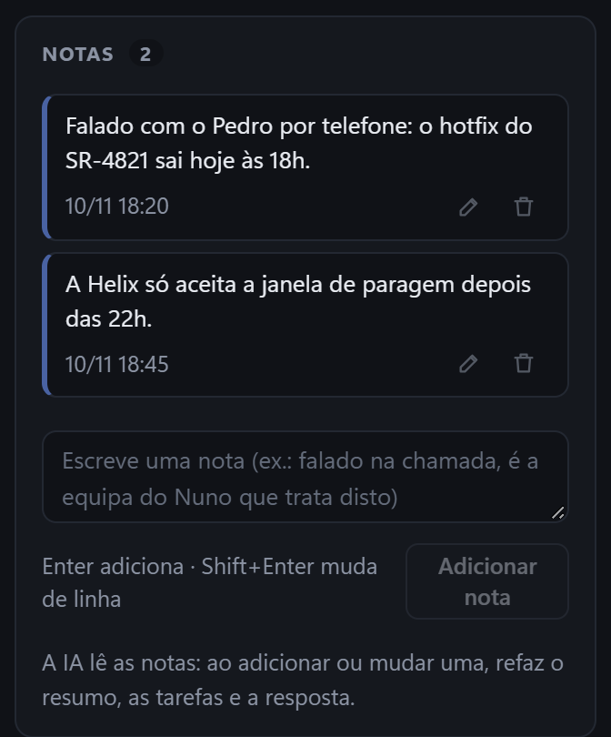
Nada fica esquecido a meio
- Em curso: respondidos, tarefas começadas, ajuda pedida à IA, rascunhos criados, ou marcado à mão.
- À espera: respondeste a pedir algo e ninguém respondeu; mostra há quantos dias úteis.
- Criar lembrete prepara um rascunho de follow-up a partir da tua última mensagem.
- Adiar tira um email da lista até uma data; volta sozinho, ou antes, se chegar resposta.
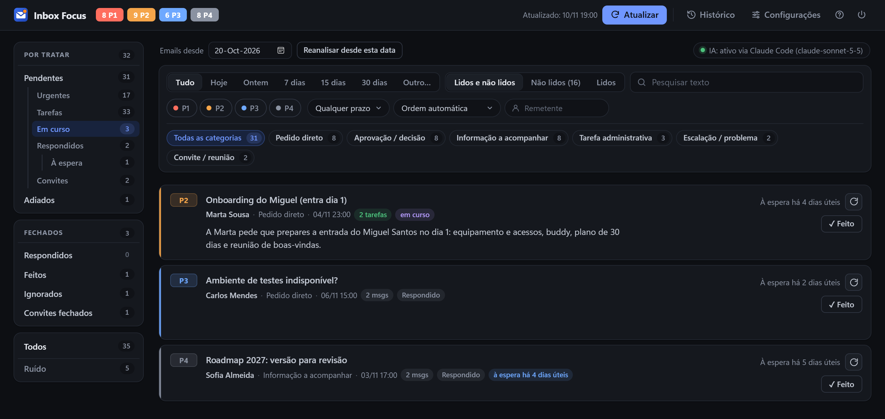
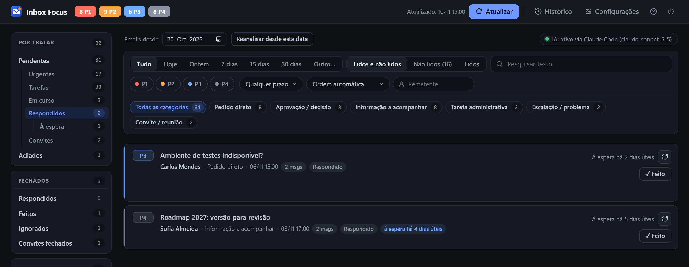
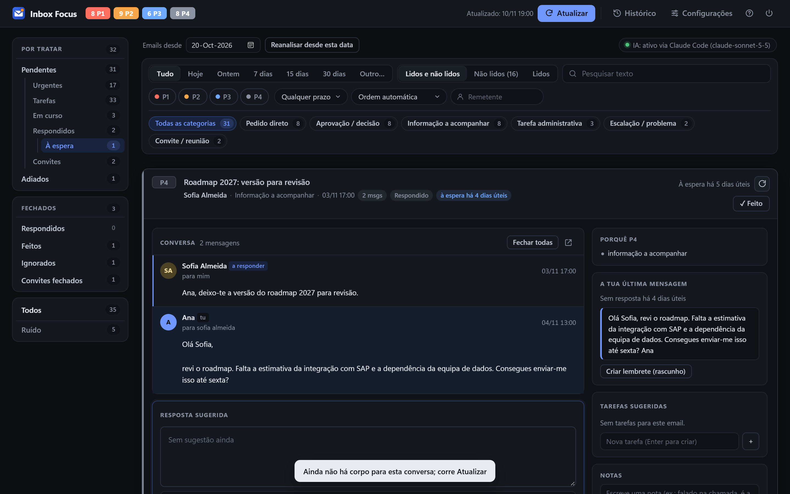
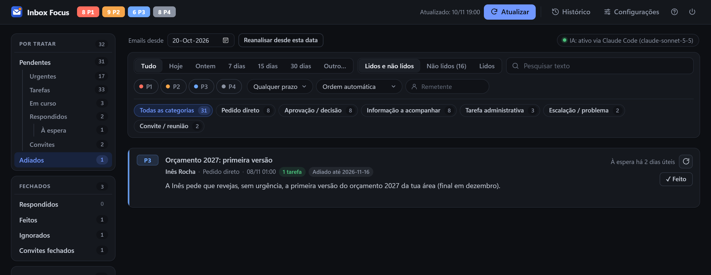
Convites de reunião com o calendário à vista
Com a ligação ao Microsoft 365 (Graph), os convites aparecem na mesma vista. Aceitar, Provisório e Recusar abrem o convite no Outlook na web, onde respondes (pela Graph responder enviaria logo, e a app nunca envia). A resposta já dada e os conflitos precisam da permissão de calendário (Calendars.Read).
- Data, hora, local e organizador, e aviso de conflito no calendário.
- Prioridade pela data da reunião; um conflito sobe um nível.
- Aceitar, Provisório ou Recusar abrem a resposta preparada no Outlook; tu envias.
- Separadores Por responder, Respondidos e Passados; os cancelamentos vão para o Ruído.
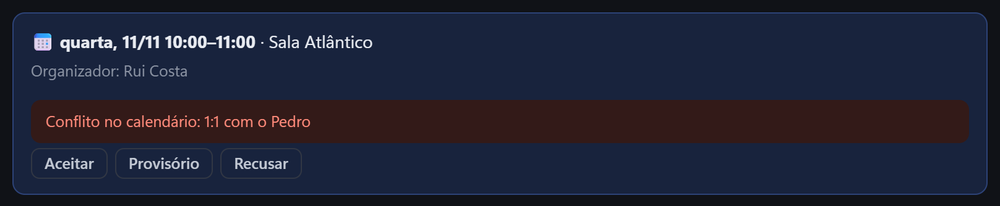
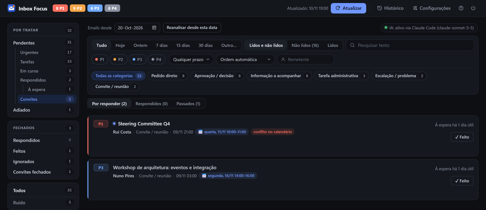
Despachar com um clique, e a Inbox fica arrumada
- Feito fecha as tarefas e marca como lido no Outlook.
- Feito e arquivar move a conversa para uma pasta do Outlook; a app sugere a pasta por remetente e domínio.
- Ignorar tira da lista sem mexer no Outlook. Spam move para o Lixo Eletrónico.
- Tudo tem Desfazer durante 8 segundos, e depois no Histórico.
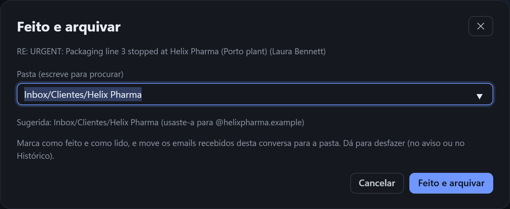
Newsletters e notificações fora do caminho
- Remetentes automáticos, newsletters, respostas automáticas e emails com "unsubscribe" em que não estás em To.
- Cada um diz porque é ruído (ex.: remetente noreply).
- Pedidos de aprovação ou de acesso nunca são ruído, mesmo vindos de um no-reply.
- Não é ruído traz de volta; a app aprende os remetentes que ignoras.
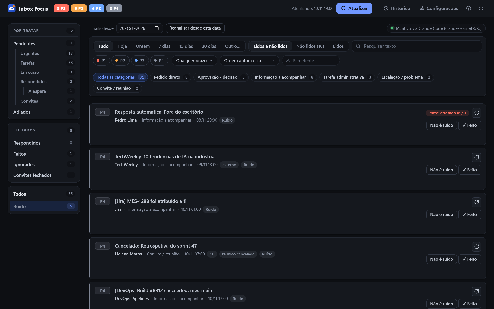
Enganaste-te? Desfaz, mesmo dias depois
- Todas as tuas alterações, com Desfazer a qualquer momento.
- Repõe o estado na app e, quando dá, no Outlook: volta a não lido, devolve à Inbox.
- Em cada conversa desfaz-se primeiro a alteração mais recente.
- Guarda 30 dias por omissão (muda nas Configurações).
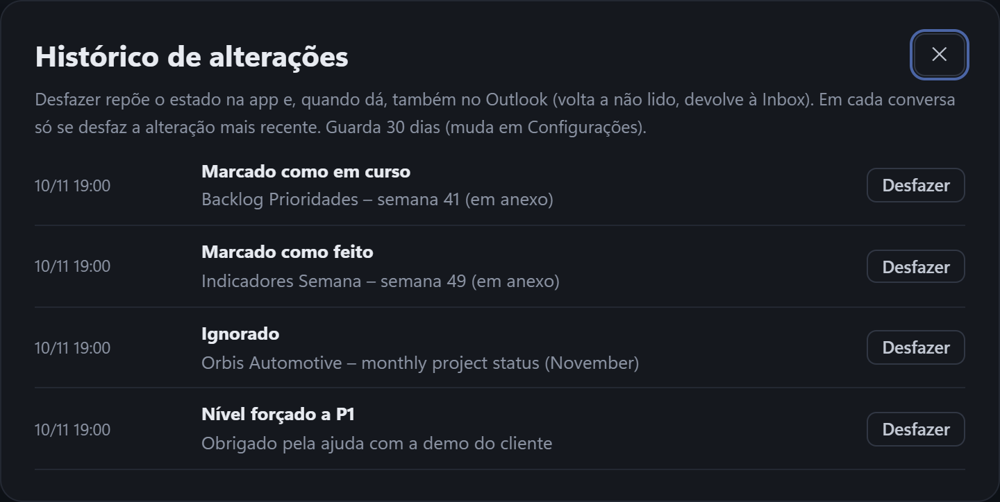
Claude, ChatGPT, Azure OpenAI, Gemini ou um modelo local
Claude: usa o Claude Code com a tua conta Claude (os passos estão em Como ativar); o Pedir ajuda usa o Cowork. ChatGPT/OpenAI: chave criada em platform.openai.com → API keys (a API paga-se à parte da subscrição do ChatGPT). Azure OpenAI: o endpoint, o deployment e a chave são dados pela TI. Gemini: chave criada em aistudio.google.com → Get API key. Modelo local: instala o Ollama, descarrega o modelo (ollama pull) e o endereço já vem preenchido. Cada IA tem um modelo sugerido, que se troca em Configurações → Mostrar avançadas. A chave também pode vir de uma variável de ambiente (OPENAI_API_KEY, AZURE_OPENAI_API_KEY, GEMINI_API_KEY). O Microsoft Copilot não serve para a análise (não tem forma de a app lhe pedir resumos e respostas), mas pode ser o site do Pedir ajuda. Mudar de IA refaz as análises quando abres ou atualizas os emails.
- Escolhes no assistente da primeira utilização; mudas depois em Configurações → IA.
- Pede só o que a IA escolhida precisa e diz onde se arranja (chave, endpoint, modelo).
- As chaves ficam no Gestor de Credenciais do Windows, nunca na configuração da app.
- Testar faz um pedido pequeno e diz o que falha: chave, modelo ou Ollama parado.
- Avisa que o conteúdo dos emails vai para a IA escolhida (com o Ollama não sai do PC).
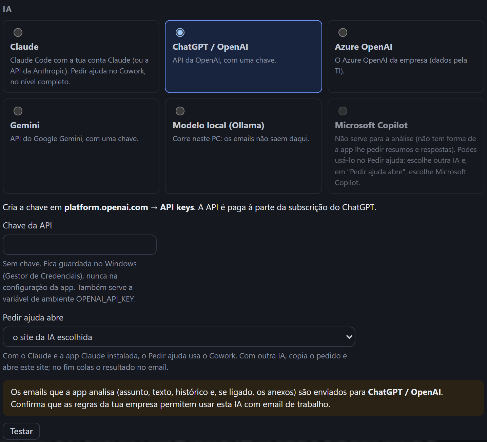
Ajustada a ti, sem mexer em código
- Língua (português ou inglês): interface, resumos e tarefas.
- Atualizar sozinho, avisar de P1 novos, dias de histórico, aviso de versão nova.
- Remetentes VIP, temas importantes, remetentes a ignorar, pastas a excluir, palavras de urgência.
- IA automática até um nível e só para os últimos dias; o resto gera-se quando abres o email.
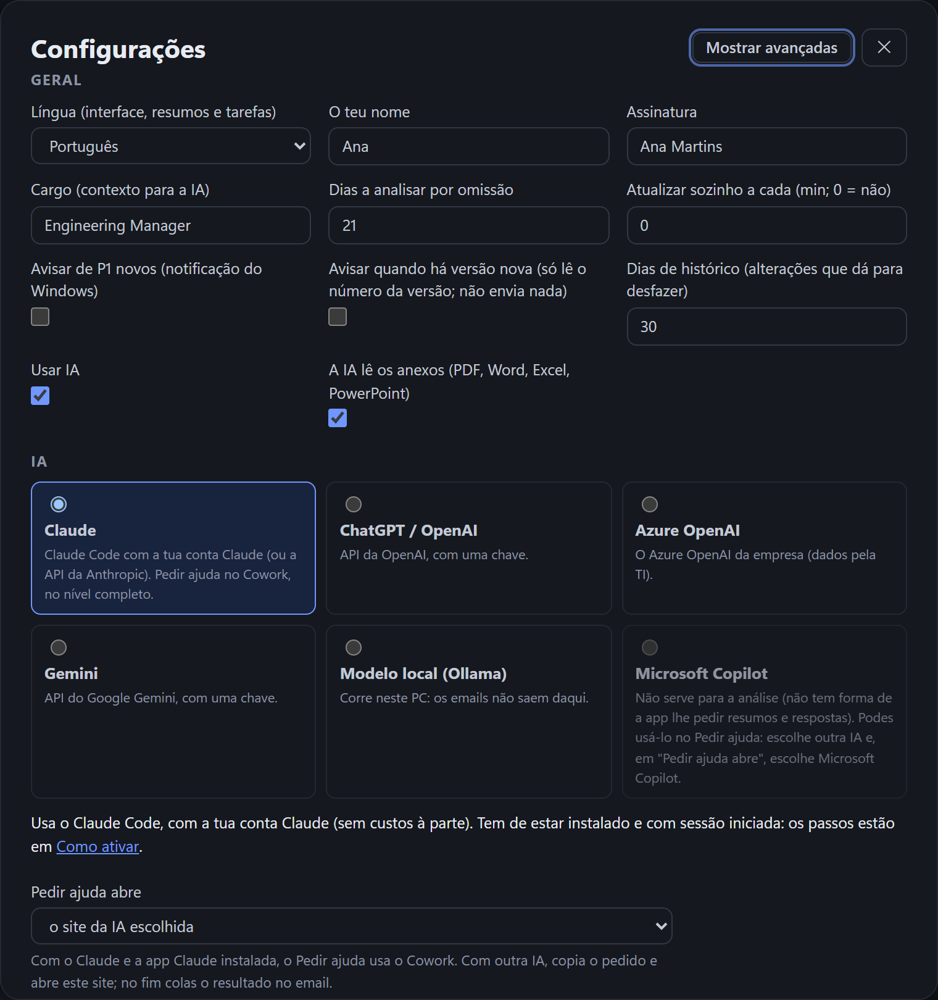
Atalhos de teclado e tema claro ou escuro
- j / k para andar, Enter para abrir, e para Feito, e mais (carrega em ?).
- Segue o tema do Windows: claro ou escuro.
- Os teus filtros, a ordem e o período ficam guardados.
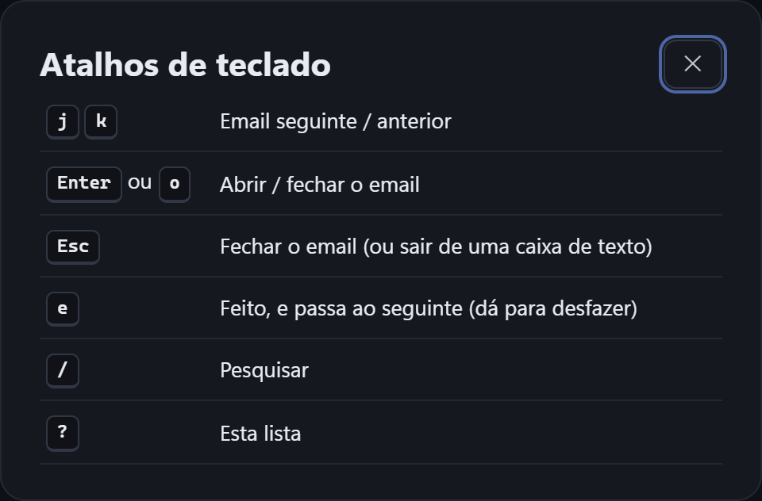
Duas formas de ler o email, quase tudo igual
Por omissão, a app lê o Outlook clássico deste PC e não precisa de nada da TI. A alternativa é ler diretamente do Microsoft 365 pelo Microsoft Graph, sem o Outlook: é a solução nos PCs em que a TI configurou o Outlook para recusar programas externos. Para isso, a TI regista a app no Entra ID e dá o Tenant ID e o Client ID; depois, em Configurações > Mostrar avançadas, muda-se a Fonte do email para Microsoft 365 e entra-se com a conta da empresa. A permissão de calendário (Calendars.Read, só leitura) é opcional: sem ela os convites aparecem na mesma, sem a resposta já dada nem os conflitos (desliga-se "Ler o calendário nos convites" nas Configurações). Em nenhum dos modos a app envia emails ou respostas a convites.
| Outlook deste PC | Microsoft 365 (Graph) | |
|---|---|---|
| Ler, priorizar, IA, tarefas | Sim | Sim, igual |
| Feito, Spam, Arquivar, Desfazer | Sim | Sim, igual |
| Criar rascunho | Nos Rascunhos; abre no Outlook do PC | Nos Rascunhos; abre no Outlook na web |
| Assinatura | A que o Outlook junta | A mesma, lida das assinaturas do Outlook no PC (escolhe-se outra nas Configurações) |
| Convites | Data, local, resposta e conflitos | Data, local e organizador; resposta e conflitos com Calendars.Read |
| Aceitar / Recusar | Abre a resposta preparada; tu envias | Abre o convite no Outlook na web; respondes lá |
| Abrir no Outlook | Outlook do PC | Outlook na web |
| Precisa de | Outlook clássico | Registo da app pela TI (Entra ID) |
Feita para usar com email de trabalho
✓ Nunca envia
As respostas ficam como rascunho no Outlook. És tu que envias.
✓ Nunca apaga
Spam move para o Lixo Eletrónico; tudo tem Desfazer.
✓ Fica no teu PC
Os dados ficam no PC. Só o texto limpo dos emails vai para a IA que escolheres (com o Ollama, nem isso sai), e a IA pode ser desligada.
✓ Explica-se
Cada nível diz porquê. As regras estão nas Configurações, à vista.
✓ Pede antes de agir
No Cowork, o Claude pede autorização antes de enviar ou alterar alguma coisa. As outras IAs não têm acesso às tuas contas.
✓ Sem registos de conteúdo
Os ficheiros de registo da app não guardam o conteúdo dos emails.
Instalar, experimentar e manter atualizada
Instalar por cima da versão atual mantém a configuração e os dados. Na primeira utilização a app pede o nome, a assinatura, o cargo, a partir de que dia ler o email e que IA usar (com o botão Testar). Depois disso, o dia a dia é só Atualizar. Se o Windows mostrar o aviso do SmartScreen, escolhe Mais informações > Executar mesmo assim.
- Precisa de Windows e do Outlook clássico (ou da ligação Graph ao Microsoft 365).
- Para a IA: Claude Code com a conta Claude, ou uma chave da OpenAI, do Azure OpenAI ou do Gemini, ou o Ollama. Sem IA, a app funciona sem resumos nem respostas.
- Versão demo: dados fictícios, não precisa de Outlook. Boa para experimentar ou mostrar.
- A app avisa quando há versão nova, mostra o que muda e descarrega o instalador.
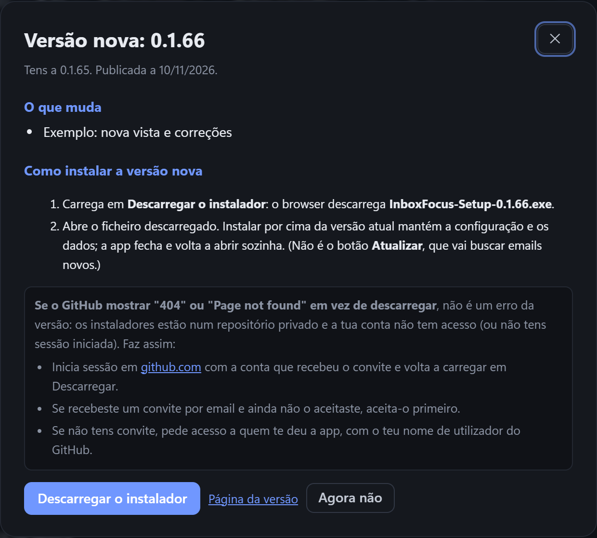
Perguntas frequentes
A app envia emails por mim?
Não. Cria rascunhos no Outlook; és tu que revês e envias.
Respondi a um email. Porque é que continua nos Pendentes?
Porque responder não fecha: fica em Respondidos (e Em curso) até carregares em Feito ou Ignorar. Assim nada se perde enquanto esperas pela resposta. Depois de fechado, aparece em Fechados > Respondidos.
A IA leu mal a conversa. Como corrijo?
Escreve uma nota a explicar (ex.: "o João já tratou disto"). A IA refaz o resumo, as tarefas e a resposta com ela. Para mudar só a resposta, usa a caixa de pedidos por baixo da resposta.
Respondi, mas o resumo ainda não mostra a minha resposta.
Carrega em Atualizar: a app vê a tua resposta e refaz o resumo, as tarefas e a resposta sugerida. As tuas respostas contam sempre, também as que enviaste depois do último email recebido.
Não vejo um email que esperava.
Confirma o período (Tudo, Hoje, 7 dias...), o filtro Lidos / Não lidos, os níveis P1–P4 e a vista. Pode também estar no Ruído: aí carrega em Não é ruído.
Aparece "IA desligada" ou "Claude Code não instalado".
Carrega em Como ativar, ao lado da linha "IA:", e segue os passos. Ter a app Claude não chega: é preciso o Claude Code com login da empresa. Sem Claude, escolhe outra IA em Configurações → IA.
Não tenho Claude. Posso usar outra IA?
Sim: ChatGPT/OpenAI, Azure OpenAI, Gemini ou um modelo local no Ollama, em Configurações → IA (ou no assistente da primeira utilização). Carrega em Testar para ver se responde. O Pedir ajuda fica no nível simples: copia o pedido, abre o site da IA e no fim colas o resultado.
A minha chave fica guardada onde?
No Gestor de Credenciais do Windows (InboxFocus/openai, por exemplo), nunca no config.toml. Apagar na secção IA tira-a de lá.
"Não encontrei o Outlook clássico".
A app precisa do Outlook clássico. O "novo Outlook" não serve; em PCs geridos pela TI, usa a ligação Graph.
Ao descarregar a versão nova aparece 404.
Os instaladores estão num repositório privado. Inicia sessão no GitHub com a conta convidada (e aceita o convite) ou pede acesso a quem te deu a app.
Posso usar sem o Outlook clássico?
Sim, com a ligação ao Microsoft 365 (Graph), depois de a TI registar a app no Entra ID. Quase tudo funciona igual; as diferenças (rascunhos e convites abrem no Outlook na web) estão na secção Outlook ou Microsoft Graph.
Com a Graph, porque é que Aceitar não responde logo ao convite?
Porque pela Graph responder a um convite envia logo a resposta, e a app nunca envia nada por ti. Abre o convite no Outlook na web e respondes lá; no Atualizar seguinte passa a Respondido.
Com a Graph, o rascunho fica sem a minha assinatura.
A app usa as assinaturas que o Outlook guarda neste PC. Se não houver nenhuma, ou se quiseres outra, escreve o nome da assinatura em Configurações > Assinatura nos rascunhos.
Onde ficam os meus dados?
No teu PC, em %LOCALAPPDATA%\InboxFocus. Instalar uma versão nova mantém-nos.